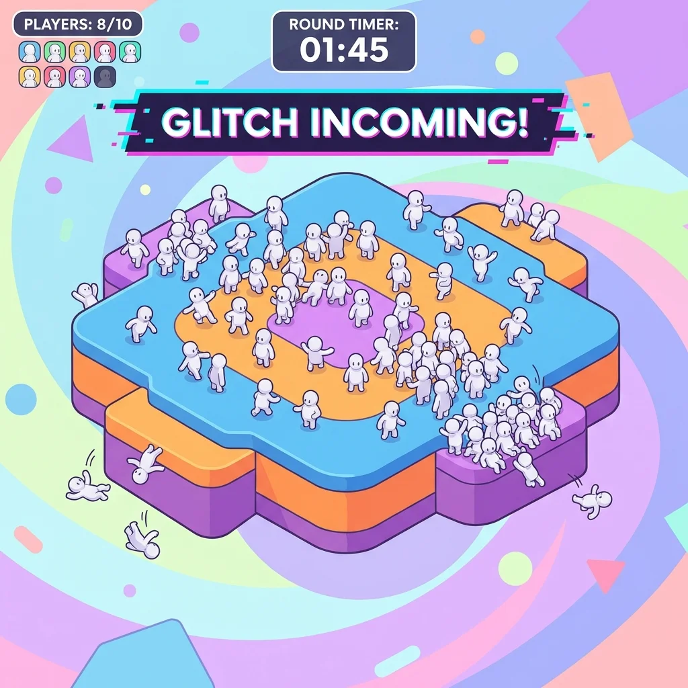
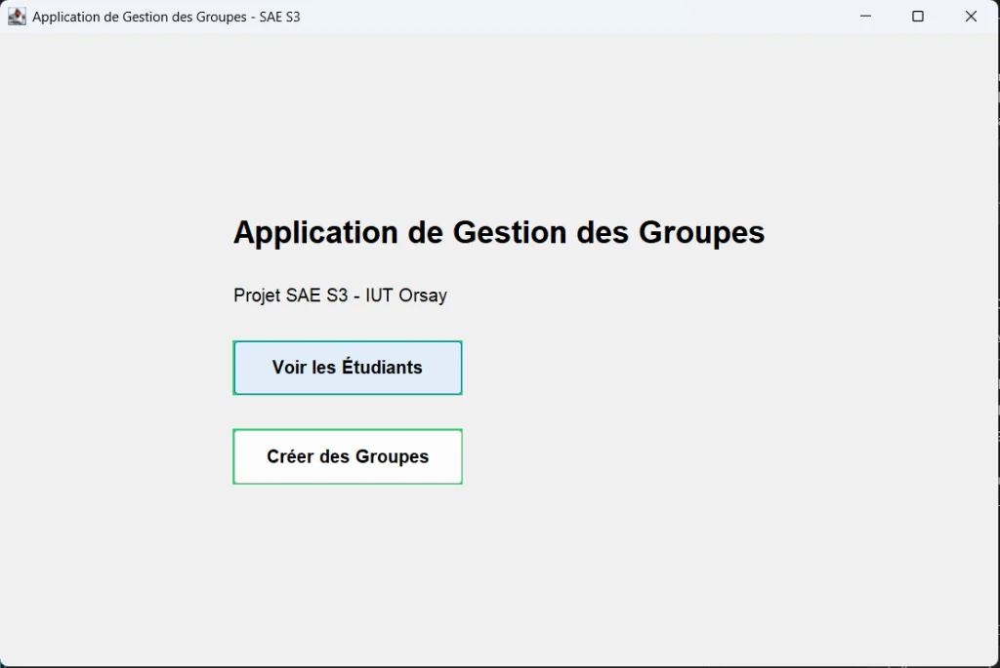
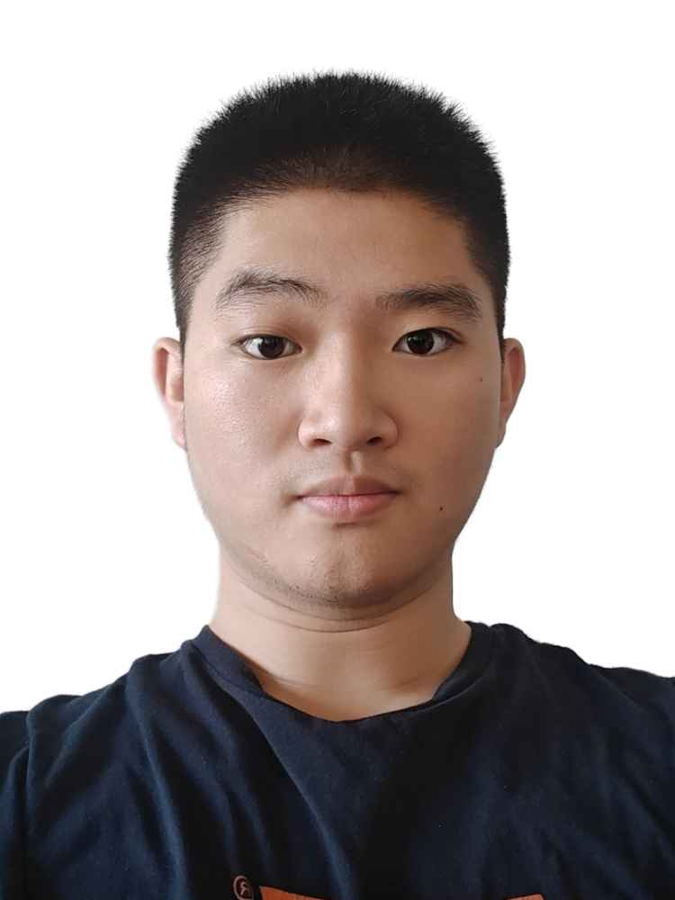

Portfolio / Développeur / 2026—27
Alexandre
Wang.
Développement web
& automatisation.
Étudiant en BUT 3 Informatique à l'IUT d'Orsay.
J'aime transformer une idée en un projet qui fonctionne.
Stage / 18 janvier — 14 mai 2027
Présentiel · Vitry-sur-Seine & environs
01 / Projet en équipe / Jeu multijoueur
Glitch
Party.
Ton téléphone.
Ton personnage. Le chaos.
Un smartphone comme manette, un écran partagé et des effets aléatoires. Un jeu en temps réel, développé en équipe de trois et déployé avec Docker.

02 / Projet personnel / Automatisation
Moins de mails.
Plus de clarté.
MailSummary
Une synthèse quotidienne des e-mails, produite par un workflow n8n et l'API Groq. Une interface web pour retrouver l'essentiel, automatiquement ou à la demande.
03 / Projet universitaire / Application de gestion
Les bons
groupes.
Organiser. Répartir. Simplifier.
Une application pour répartir les étudiants en groupes de TD et de TP selon des contraintes définies. Back-end Java, base SQL, interface PHP et travail en méthode Agile.

04 / Ma boîte à outils
Du code.
Au concret.
Je relie le développement, l'automatisation et le déploiement. Chaque technologie prend son sens dans un projet.
Développer
Applications web, gestion et temps réel.
Automatiser
Workflows, services connectés et synthèse par IA.
Déployer
Versionner, tester et faire fonctionner ensemble.

Alexandre Wang / Vitry-sur-Seine05 / Derrière les projets
Curieux.
Constructif.
2024 — 2027 / Formation
BUT Informatique · IUT d'Orsay
Université Paris-Saclay. En troisième année, parcours Déploiement d'applications communicantes et sécurisées.
1er juin — 10 juillet 2026 / 6 semaines
Agence USTS · Stage
Conception de workflows n8n pour automatiser la génération de publicités par IA, en images et vidéos. Développement assisté par Claude Code.
Juillet — août 2023 / Expérience
Tang Frères · Employé polyvalent
Accueil, service client, gestion du rayon fruits et légumes et des stocks.
Français & chinois : natifs Anglais : B1